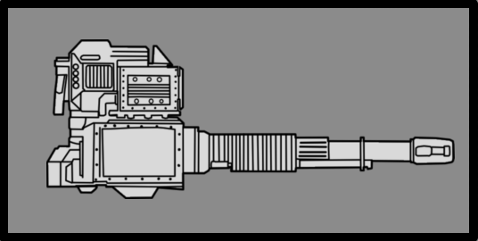
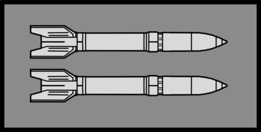
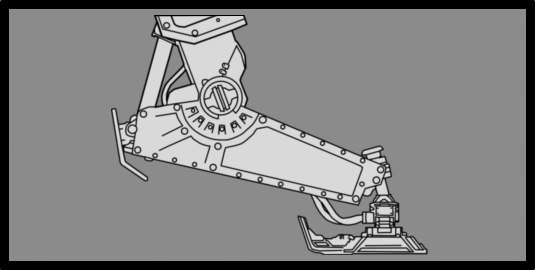

强化侦察纵步者
强化侦察纵步者
基本信息
描述
A reinforced 变体 of the 侦察纵步者 armed with rockets and 护甲 surrounding the entire 驾驶员.
阵营
机器人
最低难度
体型级别
大?
技术信息
游戏版本
the Reinforced 侦察纵步者 is an  机器人 that is an 已升级, deadlier 侦察纵步者, protecting its 装甲兵 驾驶员 with additional 返回 plating and enhancing its 武器库 with four 重型 rockets to accompany its 重型 fusion repeater.
机器人 that is an 已升级, deadlier 侦察纵步者, protecting its 装甲兵 驾驶员 with additional 返回 plating and enhancing its 武器库 with four 重型 rockets to accompany its 重型 fusion repeater.
生成[编辑 | 编辑 来源]
Reinforced 侦察兵 Striders are first found on  不可能, replacing 侦察兵 Striders. Reinforced 侦察兵 Striders can spawn from 机器人空投, within patrols, and guarding 机器人 哨站, 目标, and Minor Places of Interest.
不可能, replacing 侦察兵 Striders. Reinforced 侦察兵 Striders can spawn from 机器人空投, within patrols, and guarding 机器人 哨站, 目标, and Minor Places of Interest.
On planets invaded by the 
 生化人, the Reinforced 侦察纵步者 is absent and is replaced by Radical and Agitator.
生化人, the Reinforced 侦察纵步者 is absent and is replaced by Radical and Agitator.
行为[编辑 | 编辑 来源]
Reinforced 侦察兵 Striders will quickly approach 绝地潜兵 一次 alerted to their presence. It will 火焰 its 重型 fusion repeater three times before cooling down for four 秒. It will also 偶尔 火焰 one of its four rockets, 通常 after being alerted to a 绝地潜兵's presence; before firing a 火箭, it will briefly remain still, with the prepared 火箭 releasing exhaust before it is fired.
the Reinforced 侦察纵步者 can 践踏 on a 绝地潜兵 if they get too 关闭.
结构解析[编辑 | 编辑 来源]
| 部件名称 | 生命值1 | 护甲值2 | 耐久2 | 主血量占比3 | Overflow 便帽?4 | 构造5 | 致命? | ExDR6 | |
|---|---|---|---|---|---|---|---|---|---|
| 主体 | 500 | 0% | - | - | 无 | 是 | 0% | ||
| Faceplate | 400 | 40% | - | - | 无 | 是 | 0% | ||
| 重机枪 | 300 | 100% | - | - | 无 | 是 | 0% | ||
| 火箭 Rails (2) | 200 | 0% | - | - | 无 | 否 | 80% | ||
| Rockets (4) | 100 | 0% | - | - | 无 | 是 | 100% | ||
| 炮塔 星系 | 300 | 0% | 100% | 是 | 无 | 是 | 100% | ||
| Waist | 300 | 0% | 100% | 是 | 无 | 是 | 100% | ||
| 腿部(2) | 400 | 75% | 50% | 是 | 无 | 是 | 0% |
Disclaimer: 每个 highlighted 部分 with a 数量 has its own 生命值. Parts without a 数量 分享 生命值 pools.
1) Parts with their HP listed as "Main" do not have their own individual 生命值. 全部 造成伤害 to these parts is transferred to the 敌人's 主生命值 pool.
2) Refer to 护甲 values and 敌人 耐久度 as defined in 伤害 for 更多 information.
3) 造成伤害 to a 部分 will also be transferred in 部分 or in full to 主生命值. If 套装 to 0%, 否 伤害 is transferred.
4) If 套装 to "是", 伤害 transferred 对主血量 is capped by the combined 生命值 and 构造 of the 部分.
5) 构造 acts as a secondary 生命池 that, 一次 Main or 肢体 生命值 has been depleted, 5月 decay. The first 数字 is the 全射 构造 and the second is the 衰退速率. If 套装 to 0/s there is 否 decay and the 构造 behaves as extra 生命值.
6) ExDR means 爆炸 伤害抗性, and can 射程 from 0 to 100%. If 套装 to 100%, the 肢体 cannot take 爆炸伤害; The 爆炸伤害 will instead 目标 Main. Refer to 伤害 for 更多 information.
- Note: This 机械师, known as Affected By 爆炸 can only occur 一次 per 爆炸, regardless of 100% ExDR parts hit, and the 爆炸's 护甲穿透 must 比赛 or exceed 主体护甲 to deal 伤害 对主血量. However, if the same 爆炸 has already damaged Main, this 机械师 will not trigger.
武器配置[编辑 | 编辑 来源]
重型 Fusion Repeater

Also used by 机器人 emplacements, the 重型 Fusion Repeater has exceptional stopping 之力, albeit at a considerably 更慢 射速 and poor cooling when compared to 更小 Repeater-类型 武器.
| 属性 | 数值 | |
|---|---|---|
| 4/3/3/0 | ||
| 300发/分钟（3-回合 连射） 4.3秒（连射 延迟） | ||
| ↔[4.00] ↕[4.00] | ||
| 20 | ||
| 20 | ||
| 15 | ||
重型 HE Rockets

A 基本信息 step up from the lighter 法令 used by 更小 launchers. These 重型 rockets are loaded with 高-产出 爆炸 warheads powerful enough to blow apart fortifications and 摧毁 even armoured 载具 in a 单个 hit.
| 属性 | 数值 | |
|---|---|---|
| 范围效果 | ||
| 1m | ||
| 5m | ||
| 9m | ||
| 5/4/5 | ||
| 未知 status (弹道 伤害 Only) (3.0x 伤害 To Bastion) | ||
| 6/5/4/3 | ||
| 350发/分钟（Theoretical） ~2s (Launch 时间) 12.2秒（Between Launches) (TBD） | ||
| 4 Rockets (全射 容量) | ||
| ↔[75.0] ↕[75.0] | ||
| 20 (Warhead), 40 (爆炸) | ||
| 50 (爆炸), 40 (爆炸) ( | ||
| 25 (Warhead), 100 (爆炸) | ||
Warhead 引爆

While offensively devastating, the 重型 火箭's 载荷 is 相当 volatile. Even 小 手臂 火焰 is enough to 引爆 the warhead, destroying the walker entirely.
| 属性 | 数值 | |
|---|---|---|
| 不适用 | ||
| 范围效果 | ||
| 1m | ||
| 5m | ||
| 9m | ||
| 5/4/5 | ||
| 0/0/0/0 | ||
| 40 | ||
| 40 ( | ||
| 100 | ||
Weighty 践踏

The 重型 Strider's 腿部 are designed with mobility and grip in 心智. They can also be used to 清楚 障碍 by flattening bushes, barbed wire, or bodies if the situation demands it.
| 属性 | 数值 | |
|---|---|---|
| 3/0/0/0 | ||
| 20 | ||
| 20 | ||
| 15 | ||
战术信息[编辑 | 编辑 来源]
- Without its 驾驶员 as a weakpoint, the Reinforced 侦察纵步者 is harder to 击杀 than its 打开-backed counterpart. However, it is still 非常 易受 攻击 on its
 轻型 有护甲 rockets, which will instantly 击杀 the Strider upon 引爆. (This is currently bugged and won't 击杀 the strider, but will greatly 削弱 the 腿部).
轻型 有护甲 rockets, which will instantly 击杀 the Strider upon 引爆. (This is currently bugged and won't 击杀 the strider, but will greatly 削弱 the 腿部).
- These rockets have 两者 the lowest 数量 of 生命值 of 任何 致命 身体 部分 as well as being 0% 耐用. This means that the rockets should be the primary 目标 for the majority of 武器 when facing this 机器人.
- The waist should also be considered a 目标 for 绝地潜兵 possessing
 中型 护甲 penetrating 武器库 due to its 大 尺寸, 中等 生命值, and lack of 耐久度. This is a 好 option for 绝地潜兵 equipped with primary 武器 such as the R-63CS Diligence 反制 狙击手 or BR-14 审判者 that can 干掉 the waist quickly without having to 目标 at the 更小 rockets.
中型 护甲 penetrating 武器库 due to its 大 尺寸, 中等 生命值, and lack of 耐久度. This is a 好 option for 绝地潜兵 equipped with primary 武器 such as the R-63CS Diligence 反制 狙击手 or BR-14 审判者 that can 干掉 the waist quickly without having to 目标 at the 更小 rockets. - Even with 全部 of the rockets expended,
 轻型 penetrating 武器库 can still 应对 the Reinforced 侦察纵步者, although 更慢 than 武器 with 更多 penetrative 之力. This is due to the 轻型 有护甲 腿部 having 更多 生命值 than the waist while possessing 75% 耐久度.
轻型 penetrating 武器库 can still 应对 the Reinforced 侦察纵步者, although 更慢 than 武器 with 更多 penetrative 之力. This is due to the 轻型 有护甲 腿部 having 更多 生命值 than the waist while possessing 75% 耐久度. - Offensively, the Reinforced Strider is a 许多 larger 威胁 than its regular counterpart due to the 侧面 rockets. These will instantly 击杀 任何 潜兵 hit by one, with the sole exception of 重型 加固 护甲 unless the 绝地潜兵 is 卧倒. Near misses are almost as 致命 due to the 9-meter shockwave carrying a push 之势 of 100. This will 发送 任何 绝地潜兵 飞行 off at 高 speeds (even with the 岩石 坚固 护甲 被动) to slam into 地形 for 经常 致命 伤害.
- 绝地潜兵 bringing 载具 should take extra care of the rockets due to their 极其 高 耐久伤害 making them do 高伤害 to these 载具.
- The 火箭 launches are telegraphed by the strider standing still and the 燃烧 of the 结束 of the 火箭 being launched. These rockets aren't 非常 fast and can be easily avoided when fired from 长 distances away. At closer ranges, a 绝地潜兵 should 出击 out of the way as soon as they see the 火箭 launch. The additional 爆炸抗性 of going 卧倒 will be the only 几率 of survival.
- Given that its 装甲兵 驾驶员 is sealed inside, there is 否 风险 of being ambushed after destroying the Strider.
琐事[编辑 | 编辑 来源]
- the Reinforced 侦察纵步者 was first revealed in the Escalation of Freedom 公告 Trailer on 7月 23rd, 2024, and began appearing in-游戏 on the 更新's release on 8月 6th, 2024.
- the Reinforced 侦察纵步者 resembles the AT-ST Walker from 之星 Wars. 最多 versions of the AT-STs seen in 之星 Wars 相关 video games come with extra armaments, such as 导弹 launchers on their sides.
变更历史[编辑 | 编辑 来源]
补丁
描述
1.006.202
2026-04-28
未记录变更
- 重型 Fusion Repeater 耐久伤害从15提升至20
1.006.100
2026-03-17
修复
- 已修复 an 问题 where 侦察兵 walkers with rockets would not die when those rockets were 射击
1.006.001
2026-02-03
未记录变更
- 重型 火箭 冲击 耐久伤害从30提升至100
Unintended 变化
- 否 longer dies after exploding one of their rockets (Confirmed bug)
1.004.100
2025-10-23
未记录变更
- Faceplate 耐久度 已增加 from 0% to 40%
1.002.001
2024-12-13
变更
- 已降低 the 数字 of Reinforced 侦察兵 Striders 生成 on 更高 难度 levels
- 已增加 the 最小 射程 for Reinforced 侦察纵步者 火箭 launches
- The Reinforced 侦察纵步者 will now stand in place before launching its rockets
- 已添加 a brief 延迟 before rockets are launched
- 已改进 火箭 launch anticipation and readability with new 推进器 visual 效果
- The rockets on the 侧面 of the Reinforced 侦察纵步者 should now 爆炸 with 更多 consistency when 射击 by 玩家
1.001.104
2024-10-15
变更
- 重型 projectiles 伤害从65降低至60.
1.001.102
2024-09-24
修复
- 侦察兵 Striders will now 接收 the 毒气 困惑 效果 when damaged by 毒气.
- They will also properly take 伤害 on their 生命值 zones when receiving 伤害 from flamethrowing or 毒气 武器.
1.001.100
2024-09-17
修复
- 已修复 Reinforced 侦察纵步者 showing the 错误 名称.
1.001.002
2024-08-06
Addition
- 已添加 to the 游戏.
装甲兵 • Brawler • 机械统帅 • 火箭 奇袭者 • 特攻 奇袭者 • Marauder • MG 奇袭者 • 狂暴者 • 蹂躏者 • 火箭 蹂躏者 • 重型 蹂躏者 • 侦察纵步者 • Reinforced 侦察纵步者 • 巨型者 Obliterator • 巨型者 Scorcher • 巨型者 Bruiser • War Strider • Annihilator 坦克 • Shredder 坦克 • Barrager 坦克 • 炮舰 • 运输舰 • 移动工厂